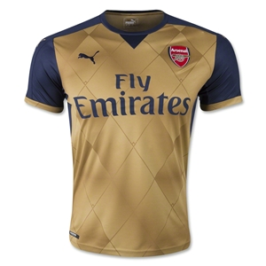
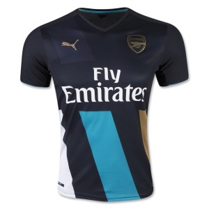
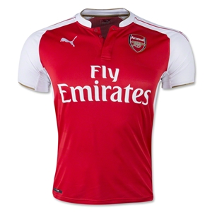

Lets see if you really have been keeping a close look at the arsenal players at the ongoing EURO 2016 in Frace!!!
The manager is showing deep confidence in the team stating the effort everyone is putting on the training ground. Also he stated concerns about the injury of Jack Wilshire and addressed the fans by confirming his fast recovery.
The Arsenal squad for season 2015-2016
JERSEYS
OUR JERSEYS THIS SEASON. BUY ONE AND BECOME A PART OF ARSENAL FAMILY. SUPPORT OUR TEAM IN OUR COLOURS.
BE A GUNNER..
 AWAY
 ALTERNATE
 HOME
The BARCLAYS PREMIER LEAGUE is one of the oldest leagues in the football world. The competition is always there till the last matches
The Premier League is an English professional league for men's association football clubs. At the top of the English football league system, it is the country's primary football competition. Contested by 20 clubs, it operates on a system of promotion and relegation with the Football League. Welsh clubs that compete in the English football league system can also qualify.
The Premier League is a corporation in which the 20 member clubs act as shareholders. Seasons run from August to May. Teams play 38 matches each (playing each team in the league twice, home and away), totalling 380 matches in the season.[1] Most games are played on Saturday and Sunday afternoons; others during weekday evenings. It is colloquially known as the Premiership and outside the UK it is commonly referred to as the English Premier League (EPL).
OUR TOP PLAYER OF THE SEASON
"MESUT OZIL"
Check his profile and performance!!
I have always wanted to work consistently and will continue to do the same in the coming seasons as well for my club.
I only want to win BARCLAYS PREMIER LEAGUE with ARSENAL. This season was really great for me and for the team as well.
Hopefully we will win the league next season after finishing 2nd after a great season.